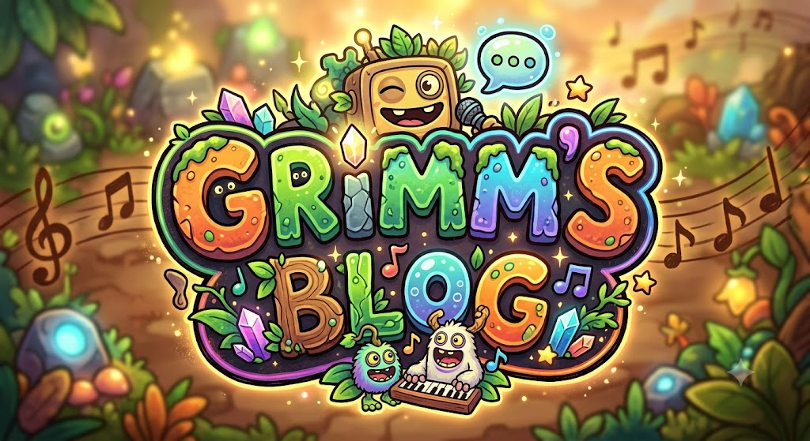

Bem-Vindos ao cantinho do GRIMM'S BLOG!
Por:Thiago Poleza
bem vindo a o GRIMM'S BLOG
Ola pessoal bem vindos ao meu cantinho de my singing monsters aqui falaremos sobre atualizaçoes, teorias, desenhos , variantes de monstros esse estilo mais reconfortante e uma arvore onde aqui poderemos comentar sobre os nosso assuntos sem problemas!